ヘッドウォータースのフィード
https://zenn.dev/p/headwaters
株式会社ヘッドウォータースのテックブログです。 生成AI、LLM、Azureのサービスや資格、IoT、XR系などData&AIとApp modernizeに関して幅広く投稿します！
フィード
【学習ログ】RAGとは
ヘッドウォータースのフィード
はじめまして、株式会社ヘッドウォータースの山尾弘大（やまお こうだい）です。今回はRAGについて勉強したのでアウトプットとしてZennに記事を投稿します。まず、RAGを説明する前にLLM（大規模言語モデル）について説明します。 LLM（大規模言語モデル）LLM（大規模言語モデル）とは膨大なテキストデータとディープラーニングを用いて構築された技術のことです。身近な例でいうと「ChatGPT」や「Gemini」などもこのLLMによって回答を生成しています。LLMは、人が話す言葉（自然言語）を理解して、文章を作成したり、質問に回答したりするロボットというイメージを持ってもらうとわか...
20時間前
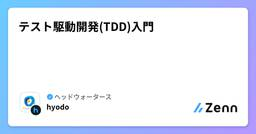
テスト駆動開発(TDD)入門
ヘッドウォータースのフィード
テスト駆動開発(TDD)入門 はじめにテスト駆動開発（TDD）について、概念的なものは理解していたものの、改めて整理したので備忘録します。（今度プロジェクトで試しにやってみる） TDDとはテスト駆動開発（TDD）は、より良いコードを書くためのプログラミング手法。TDDというとテストの手法かと思ってしまいますが、高品質なプロダクトコードを作成するための開発手法です。 TDDに関するよくある勘違い❌ 「TDDはテスト手法である」❌ 「TDDさえすれば他のテストは不要」アプリケーションの単体テストに有効E2Eテスト（ユーザーが一連の操作を最初から最後まで通...
20時間前
ブロッホ球について
ヘッドウォータースのフィード
ブロッホ球についてのレイサマリーです。ディープラーニングの学習の時に、バックプロパゲーションの理解が初学者の関門になる気がするのですが、量子コンピュータの理解に置いてはこのブロッホ球が理解できるかどうかが初期のハードルになるのではないかと、個人的には思っています。(私も思いっきり初学者ですが。。) What(どの様なものなのか)量子ビット(二準位系の量子状態)の状態を以下の様な球面上の点の位置に置き換えたモデル量子ビットの状態は \ket{\psi} = \alpha \ket{0} + \beta \ket{1} という式(波動関数)で表すことが出来る (| \alph...
21時間前
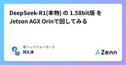
DeepSeek-R1(本物) の 1.58bit版 を Jetson AGX Orinで回してみる
ヘッドウォータースのフィード
Bitnet版のDeepSeek-R1を触ってみました。蒸留版ではないです。https://huggingface.co/unsloth/DeepSeek-R1-GGUF 実行速度はこのぐらい(止まってないです。。)途中でとめましたが、数字でみると以下の通りです。llama_perf_sampler_print: sampling time = 21.34 ms / 156 runs ( 0.14 ms per token, 7310.22 tokens per second)llama_perf_context_print: ...
2日前
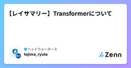
【レイサマリー】Transformerについて
ヘッドウォータースのフィード
本記事の目的 Transformerの知識の確認とアウトプットをする レイサマリーの練習をする どのような技術か深層学習で使用する学習モデル構造の一種。様々なデータ形式(言語・音声・画像等)の学習時に利用できるモデル。提案された当初はEncoder-Decoderモデルだが、Encoderのみ(BERT)、Decoderのみ(GPT)のモデルも存在する。Encoder:データを特徴量に変換する機構Decoder:特徴量をデータに変換する機構内部構造がほとんどAttentionと線形層により構成されている。Attention機構データ内部やデータ間の関係...
2日前
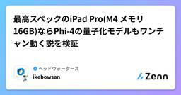
最高スペックのiPad Pro(M4 メモリ16GB)ならPhi-4の量子化モデルもワンチャン動く説を検証
ヘッドウォータースのフィード
先に結論llama.cppだと1bit量子化モデルなら動く、しかし自然言語な回答は生成はできないmlx-swiftだと4bit量子化モデルまで動く、自然言語な回答は生成できるが質問に対する回答にはなっていない上記の結果から、「現時点ではPhi-3.5-miniの8bitを使うのが良い」です。 背景Microsoftの最新SLMモデルであるPhi-4が1月の中旬に商用利用可能となりました。「AGX Orinで動いた」や「Macbook Proで動いた」の記事を見かけたので、M4 iPad Proでもいけるんじゃねー？と社内で話題になり検証してみました。社内メンバーの検証...
3日前
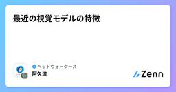
最近の視覚モデルの特徴
ヘッドウォータースのフィード
最近の視覚モデルについての情報を共有します。 昨今の視覚モデル2025年現在では視覚タスクの多くが、ビジョン言語モデル (VLM) or ビジョン基盤モデル (VFM)に代表される視覚モデルで解けるようになったのではと考えています。下図のように、時を経るにしたがって視覚タスクの取り扱いがより汎用的かつ高性能になっているのが見て取れます。https://www.preprints.org/manuscript/202411.0685/v1例えば、Unified-IO 2では、1つのVFMで以下のような広範囲のタスクを解くことができます。しかも1つ1つの出来も悪くはなく、使い物...
3日前
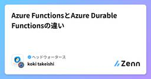
Azure FunctionsとAzure Durable Functionsの違い
ヘッドウォータースのフィード
掲題について、GPT-o1さんに質問した回答です。 Azure FunctionsとAzure Durable Functionsの違いAzure Functions はイベント駆動型のサーバーレスプラットフォームで、HTTP や Queue、Timer、Event Grid など様々なトリガーに応じてコードを実行するための仕組みです。一方で Azure Durable Functions は Azure Functions 上で複数の関数のオーケストレーションやステートフルなワークフローを構築するための拡張機能です。両者の主な違いは以下の通りです。 1. ステートフルなオー...
3日前
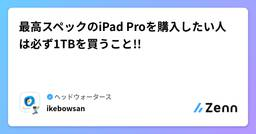
最高スペックのiPad Proを購入したい人は必ず1TBを買うこと!!
ヘッドウォータースのフィード
社内の研究目的でタブレットを購入することになったので、現時点の最高スペックのiPadを買おう!というなりました。ということで「最高スペックだから、iPad Pro 11インチ ストレージ256GB M4チップを購入したらいいだろう (￣∇￣)」とポチっちゃいました...https://www.apple.com/jp/ipad-pro/specs/...しかし、よくみてみるとストレージの256GB or 512GBか1TB or 2TBでよって中身のスペックが変わるようです...CPUが9コア→10コアメモリが8GB→16GBにアップします。Youtubeで説明して...
3日前
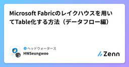
Microsoft Fabricのレイクハウスを用いてTable化する方法（データフロー編）
ヘッドウォータースのフィード
0.対象となる読者Ⅰ．Microsoft Fabricを使いたいと考えている方Ⅱ．Microsoft Fabricを利用しているが、レイクハウスがどのようなものか、どのような役割をしているかがわからない方Ⅲ. レイクハウスの使い方や活用の仕方が分からない方Ⅳ．レイクハウスのFilesやTablesの違いについて理解したい方（まだ理解できてない方）Ⅴ. レイクハウスのデータを可視化したいと考えている方そもそもレイクハウスってなに？という疑問を持っている方は自分が書いた以下の記事を参考にしていただけたらと思います。https://zenn.dev/headwaters/a...
4日前
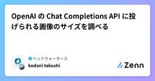
OpenAI の Chat Completions API に投げられる画像のサイズを調べる
ヘッドウォータースのフィード
概要表題の通りですが、自分の知る限りではドキュメントに画像サイズの制限について書かれていないため、どの程度のサイズの画像ファイルまで分析できるのか調べました。（一応GPT-4 Turbo with Visionのときは20MB制限という記述があるのですが、GPT-4oでは20MBを下回っていてもエラーが出ることがあります） 結果ファイルサイズとしては5~10MB程度のファイルサイズを超える辺りでエラーが出る傾向が確認できました。しかし、今回試した方法で、画像がこうだとエラーが出る、というのを正確に測ることは出来ませんでした。画像サイズを大きくしていくとエラーが出ることは確認...
4日前
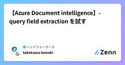
【Azure Document intelligence】- query field extraction を試す
ヘッドウォータースのフィード
執筆日2024/1/28 やること昨年の11月にAzure Document intelligenceのv4.0が発表されました。query field extractionという機能が追加されたので、そちらの検証を行おうかなと。https://learn.microsoft.com/en-us/azure/ai-services/document-intelligence/concept/query-fields?view=doc-intel-4.0.0 Azure Document intelligenceとは？https://zenn.dev/headwate...
4日前
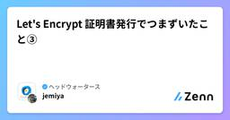
Let's Encrypt 証明書発行でつまずいたこと③
ヘッドウォータースのフィード
事象今回もLet's Encryptの証明書更新エラーが起きた事象があったのでその事象を共有します。 使用環境AWSVPCAWS EC2 (OSはUbuntu)セキュリティグループでのIP制限 状況Let's Encrypt証明書が更新できるかを確認するために更新前に"--dry run"オプションを付随させて、コマンド実行をしてみる。certbot renew --dry-runエラーが発生する。Failed to renew certificate amex.stg.i-sma.com with error: Some challenges ...
4日前
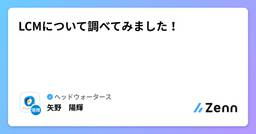
LCMについて調べてみました！
ヘッドウォータースのフィード
はじめにこんにちは！株式会社ヘッドウォータースの新卒1年目の矢野と申します。最近、Meta社が発表した新しいAIモデル「LCM（Large Concept Model）」をご存じですか？この革新的な技術は、AIの言語処理能力を飛躍的に向上させる可能性を秘めています。本記事では、LCMの概要や特徴、従来のモデルとの違い、そして実際の応用例について詳しく解説します。これからLCMを活用してみようと考えている方や、具体的な利用シーンを知りたい方に向けて、わかりやすくまとめていきます！ 大規模概念モデル（LCM）とは？Meta社が2024年12月に発表した大規模概念モデル(L...
4日前
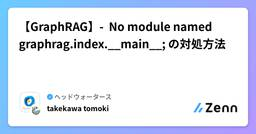
【GraphRAG】- No module named graphrag.index.__main__; の対処方法
ヘッドウォータースのフィード
執筆日2025/1/27 発生事象GrapghRAGのプロジェクトの初期化をする際に、以下のエラーが。>python -m graphrag.index --init --root ./No module named graphrag.index.__main__; 'graphrag.index' is a package and cannot be directly executed 原因graphragのバージョンが原因でした。graphrag==1.2.0 対処方法GraphRAG == 0.4.0以上の場合は、以下のコマンドで実施する。ワ...
5日前
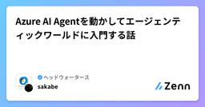
Azure AI Agentを動かしてエージェンティックワールドに入門する話
ヘッドウォータースのフィード
はじめにAI Agent、最近話題ですよね。とはいえまだ実態が掴めていない方も多いかと思います。そういうわけでAI Agentを動かしてエージェンティックワールドに入門してみようという記事になります。 事前準備 事前に必要なものAzureアカウント必要なロールpython実行環境(今回はjupyterで動かします。)Azure CLI 環境構築 ローカルローカル環境では、Agentの作成と、エージェントが呼び出す関数の実行等行います。Azure CLIでログインしておいてください。az loginpip install azure-ai-pr...
8日前
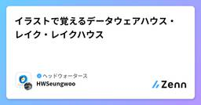
イラストで覚えるデータウェアハウス・レイク・レイクハウス
ヘッドウォータースのフィード
0.対象となる読者Ⅰ.大量のデータの処理や保管について悩んでいる方Ⅱ.データウェアハウスやデータレイク、データレイクハウスの違いや概念をしっかり理解しておきたい方Ⅲ.難しい用語はわからないし、簡単にイメージとして理解しておきたい方全部読む時間なんかない、違いや概念を度忘れしただけだよという方はまとめだけ読んで頂いても構いません。 1. はじめに最近、生成AIによる業務の自動化や効率化が進み、「AIの時代」が到来していますね。このAIを支える原動力が「データ」で、その「データ」の重要性は、これまで以上に高まっています。しかし、膨大なデータをどのように活用し、効率的に...
8日前

Azure AI Foundryを利用した5分でできる生成AI評価方法
ヘッドウォータースのフィード
前置き生成AIの精度評価って難しいですよね？要約、翻訳などのタスクごとに評価指標も違うし、データセットも違うし、そもそも定量評価なんて信用ならん、人の評価が絶対必要って話にもなりがちかなと。基本的にはロジックで評価する定量評価と人の評価って役割が違うので、社内のユーザーが使う業務マニュアルを使ったチャットボットとかの評価だと、使う人の前提知識、質問の仕方、システムの誘導、回答の精度、回答方法など全部加味して使える使えないかの判断は、人が評価すべきだし、正解が人によって変わるならGood/Badとか、星の数とかで統計的な評価をするしかないかなと。インデックス更新時やモデル更新時に...
8日前
AutoGen Studioではじめるエージェント検証
ヘッドウォータースのフィード
はじめにAutoGenというAIエージェントの作成とエージェント同士の連携が試せるフレームワークがあります。https://microsoft.github.io/autogen/stable/index.htmlSDKとしてPythonでエージェントを作ることができますが、ノーコードでエージェントのワークフローを考えたり、エージェント自体の定義、モデルの組み合わせなどが検証できる、AutoGen Studioというアプリがあり、まずはAutoGen Studioでクイックにエージェントの設計をした方が良いかと思います。今回は特定企業の企業価値について、日本の経済動向を絡めて...
10日前
AutoGenでAIエージェントのデザインパターンを学ぶ(1)：Passive Goal Creator
ヘッドウォータースのフィード
やることPassive Goal Creatorと呼ばれるデザインパターンで具体的な目標を引き出す 背景今年流行すると言われているAIエージェントのデザインパターンをキャッチアップしていきます。元ネタは以下の書籍です。https://gihyo.jp/book/2024/978-4-297-14530-9この書籍で説明されているさらに元ネタは以下の論文です。https://arxiv.org/abs/2405.10467 全体像上の論文ではデザインパターンが18種類紹介されており、全体像は以下の図で示されています。また、AIエージェントの役割が6つ挙げられてい...
10日前